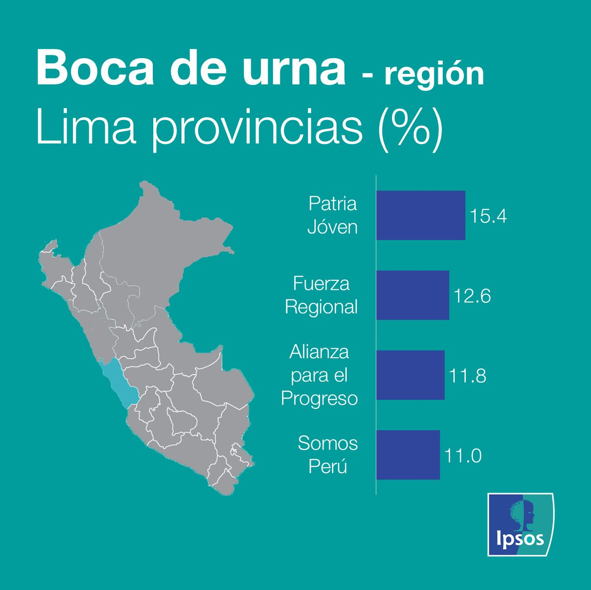
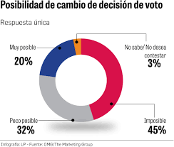
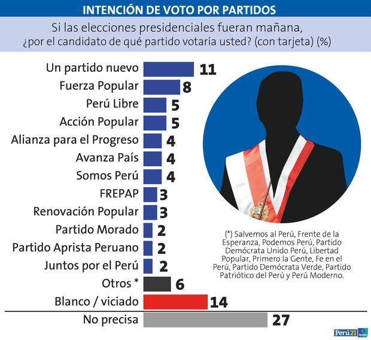

Mantente al día con nuestra plataforma integral que te ofrece información en tiempo real sobre tus elecciones. Recibe datos actualizados, estadísticas detalladas y las últimas noticias en un solo lugar. Todo lo que necesitas para estar bien informado y tomar decisiones acertadas, lo encontrarás aquí.
¿Ya tienes una cuenta? Inicia sesión aquí
ElectoFácil es una plataforma diseñada para informarte sobre tus elecciones locales. Libre de sesgos y sin vínculo con ningún partido o corriente política.
Responde encuestas para dar a conocer tu opinión. Visualiza las tendencias de miles de usuarios.
Accede a noticias relevantes de tus candidatos y partidos favoritos.
Visualiza resultados electorales en tiempo real y antes que todos.
ElectoFacil ha ayudado a miles de usuarios a informarse acerca de la política en sus ciudades. Estamos comprometidos con la transparencia y la objetividad de nuestra plataforma, ofreciendo un servicio libre de sesgos y sin filtros.
Es imprescindible para cualquier persona interesada en los procesos electorales. Proporciona acceso rápido a datos actualizados, estadísticas detalladas y las últimas noticias, ayudando a mantenerse bien informado y tomar decisiones fundamentadas.
Encuentro la información política local que necesito de manera rápida y clara con esta plataforma. Me ofrece datos actualizados, estadísticas detalladas y noticias relevantes en un formato fácil de entender. Es una herramienta esencial para mantenerme informado y tomar decisiones bien fundamentadas.
Me mantiene al tanto de las últimas noticias políticas locales de manera eficiente. Con esta plataforma, recibo actualizaciones constantes, datos precisos y análisis detallados sobre los eventos políticos en mi área. Es una herramienta invaluable para estar bien informado y entender mejor el panorama político local.
Boca de urna y resultados oficiales
  